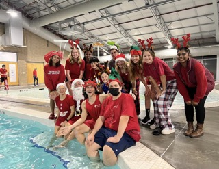

Professional Life
I am a Communications Fellow at Elon, and I have worked several jobs throughout high school and at Elon. My first job was at a local German bakery, followed by two separate lifeguarding jobs that I still take shifts at in the summers. At Elon, I recently started a job as Event Support Staff in Media Services.
